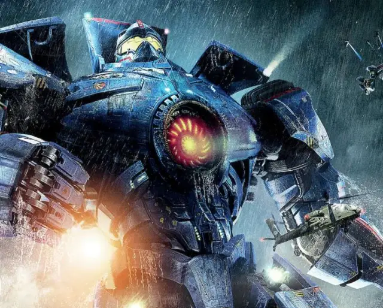

Pacific Rim
Pacific Rim est un blockbuster américain sorti le 17 juillet 2013 dans les salles de cinéma en France. C’est un film de science-fiction apocalyptique...
Lire la suite
Bienvenue sur “Continuous Evolution”. Ce site a pour thématique l’évolution et le changement. Il va vous faire voyager à travers les dernières années à travers 6 expériences présentées par ordre chronologique. Ces expériences sont des articles qui vont vous faire prendre conscience du changement continu du monde dans lequel on vit.
Pacific Rim est un blockbuster américain sorti le 17 juillet 2013 dans les salles de cinéma en France. C’est un film de science-fiction apocalyptique...
Lire la suite